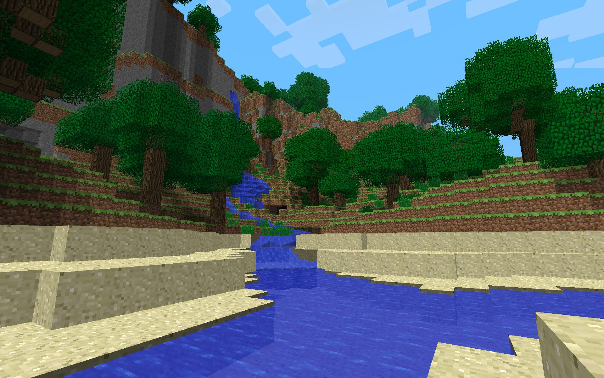
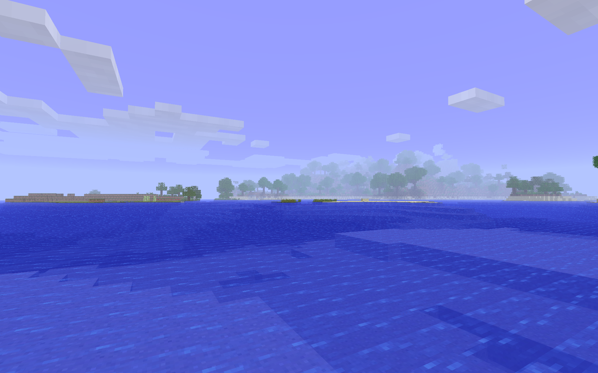
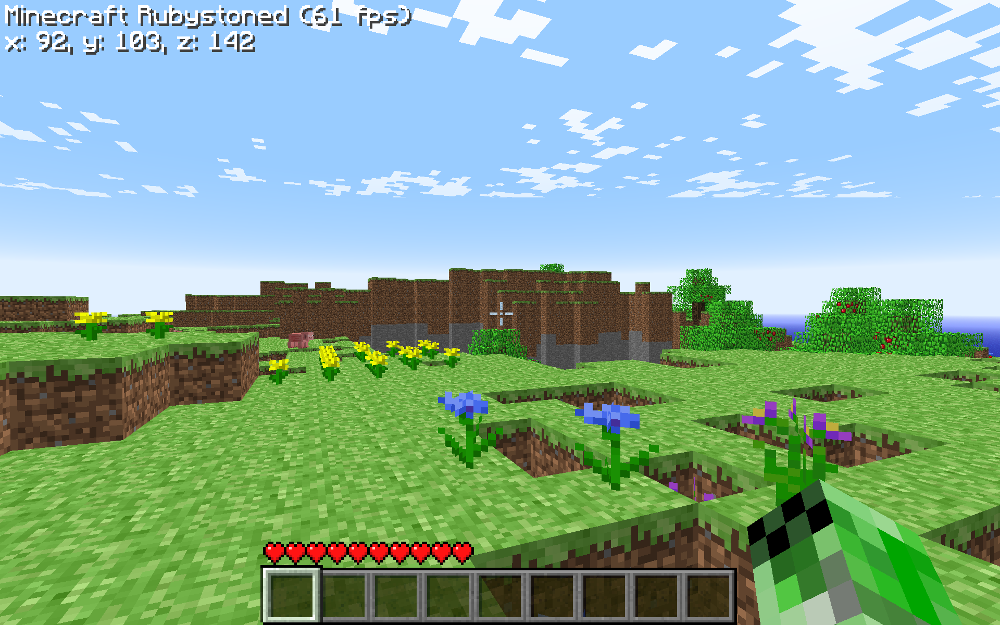
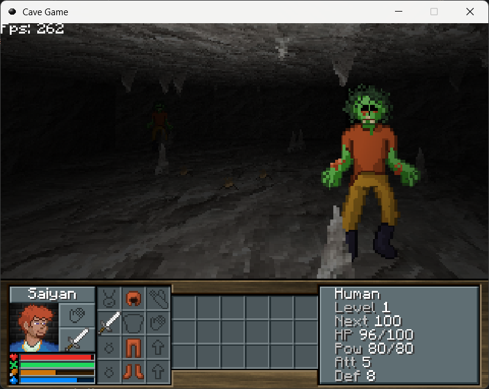

Here are some of the games I have created, listed in released order.
Minecraft Old-School

The first mod I ever made, based on Eaglercraft Beta 1.3_01. It used to be on Lax's original Beta 1.3_01, but I switched to Colbster's port. Since it was the first, it was the one with the least stuff in it. I barely knew how implement the features back then, all I did was just add textures. All it has is custom textures and only one custom mob, being the wraith. I would later add more content in the next mod, Old-School DX.
I'm currently doing a rework of it, making it a "lite" version of Old-School DX.
Minecraft Old-School DX

The second mod I made, being a total overhaul of the original, now on Eaglercraft Beta 1.7.3, made by Peyton. This version is packed with new features, items, blocks, and items. The mod is way more complete then the original as I actually learned how to code in java now.
Maybe a rework will be done in the future. Once Peyton updates the the Beta 1.7.3 port.
Minecraft Rubystoned

The third mod I made, (is this a trilogy? lol) made on the Eaglercraft Indev port by Colbster (he actually is a contributor to rubystoned aswell!). It has some stuff so far, I just haven't time to work on it fully yet. It does have some custom textures, blocks, items, mobs, and even dark mode, but it's still a work in progress.
Rubystoned when? Rubystoned later. Probably after finishing Old-School DX.
Cave Game

Cave Game! A mod of Legend Of The Chambered I, making it into a complete overhaul with new maps, items, enemies, bosses, and original story. This mod is more divergent then the rest. While my Eaglercraft mods were more vanilla-focused, Cave Game is just a story I want to tell really.
I'm currently working on the second demo, you can get the first demo , and make sure to have Java installed!